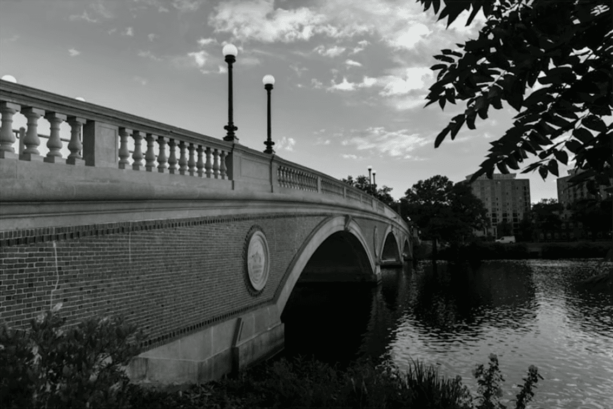
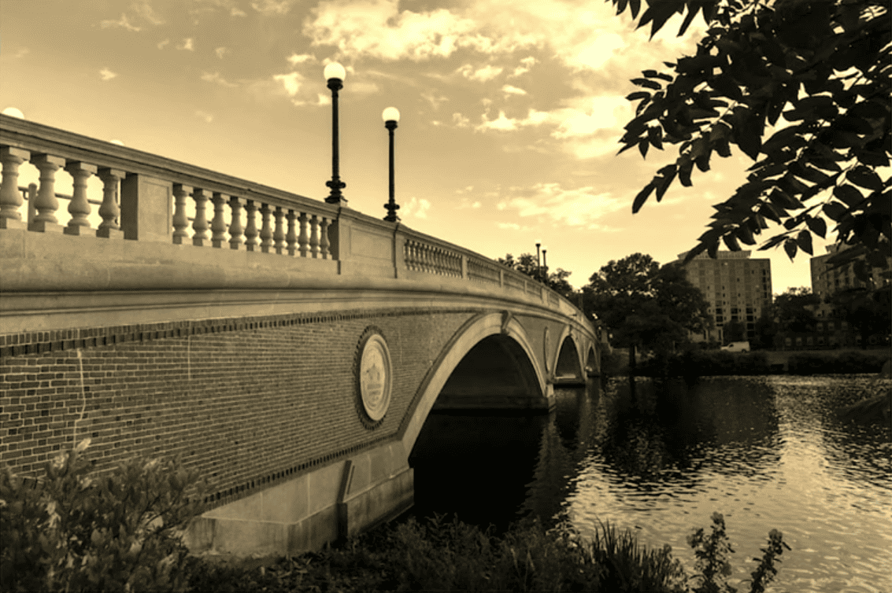
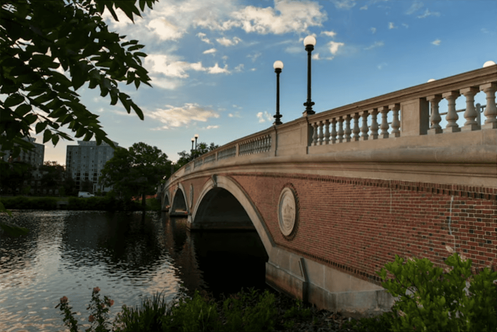
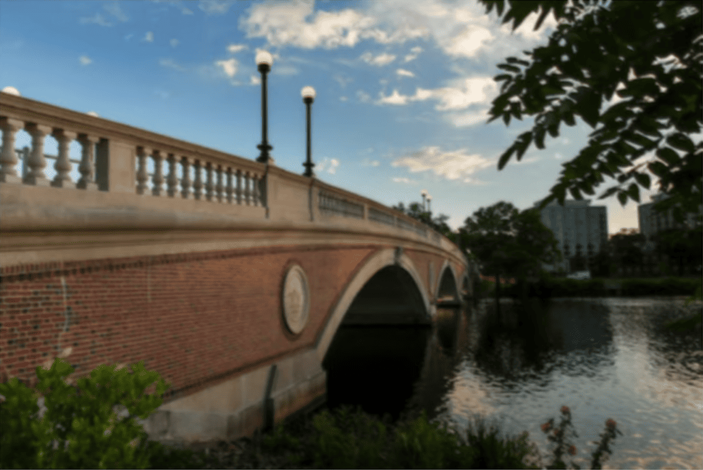

Фильтрация изображений
Что вообще означает фильтрация изображения?
Вы можете представить себе фильтрацию изображения как взятие пикселей некоторого исходного изображения и изменение каждого пикселя таким образом, чтобы определенный эффект был заметен в результирующем изображении.
Оттенки серого
Одним из распространенных фильтров является фильтр «оттенки серого», когда мы берем изображение и хотим преобразовать его в черно-белое. Как это работает?
Вспомните, что если значения красного, зеленого и синего установлены на 0x00(шестнадцатеричное для 0), то пиксель черный. А если все значения установлены на 0xff(шестнадцатеричное для 255), то пиксель белый. Пока значения красного, зеленого и синего все равны, результатом будут различные оттенки серого вдоль черно-белого спектра, причем более высокие значения означают более светлые оттенки (ближе к белому), а более низкие значения означают более темные оттенки (ближе к черному).
Итак, чтобы преобразовать пиксель в оттенки серого, нам просто нужно убедиться, что значения красного, зеленого и синего имеют одинаковое значение. Но как узнать, какое значение им задать? Что ж, вероятно, разумно ожидать, что если исходные значения красного, зеленого и синего были довольно высокими, то новое значение также должно быть довольно высоким. А если исходные значения были низкими, то новое значение также должно быть низким.
Фактически, чтобы гарантировать, что каждый пиксель нового изображения по-прежнему имеет ту же общую яркость или темноту, что и старое изображение, мы можем взять среднее значение красного, зеленого и синего, чтобы определить, какой оттенок серого сделать для нового пикселя.
Если применить это к каждому пикселю изображения, результатом будет изображение, преобразованное в оттенки серого.

Сепия
Большинство программ для редактирования изображений поддерживают фильтр «сепия», который придает изображениям ощущение старины, делая все изображение слегка красновато-коричневым.
Изображение можно преобразовать в сепию, взяв каждый пиксель и вычислив новые значения красного, зеленого и синего на основе исходных значений трех.
Существует ряд алгоритмов для преобразования изображения в сепию, но для этой задачи мы попросим вас использовать следующий алгоритм. Для каждого пикселя значения цвета сепии должны быть рассчитаны на основе исходных значений цвета согласно приведенному ниже.
sepiaRed = .393 * originalRed + .769 * originalGreen + .189 * originalBlue
sepiaGreen = .349 * originalRed + .686 * originalGreen + .168 * originalBlue
sepiaBlue = .272 * originalRed + .534 * originalGreen + .131 * originalBlue
Конечно, результат каждой из этих формул может не быть целым числом, но каждое значение может быть округлено до ближайшего целого числа. Также возможно, что результатом формулы будет число, большее 255, максимального значения для 8-битного цветового значения. В этом случае значения красного, зеленого и синего должны быть ограничены 255. В результате мы можем гарантировать, что результирующие значения красного, зеленого и синего будут целыми числами от 0 до 255 включительно.

Отражение
Некоторые фильтры также могут перемещать пиксели. Отражение изображения, например, — это фильтр, где результирующее изображение — это то, что вы получили бы, поместив исходное изображение перед зеркалом. Таким образом, все пиксели на левой стороне изображения должны оказаться на правой, и наоборот.
Обратите внимание, что все исходные пиксели исходного изображения по-прежнему будут присутствовать в отраженном изображении, просто эти пиксели могли переместиться и оказаться в другом месте изображения.

Размытие
Существует несколько способов создания эффекта размытия или смягчения изображения. Для этой задачи мы воспользуемся «блюром размытия», который работает, беря каждый пиксель и для каждого значения цвета присваивая ему новое значение путем усреднения значений цвета соседних пикселей.
Рассмотрим следующую сетку пикселей, в которой мы пронумеровали каждый пиксель.

Новое значение каждого пикселя будет средним значением всех пикселей, которые находятся в пределах 1 строки и столбца исходного пикселя (образуя поле 3x3). Например, каждое из значений цвета для пикселя 6 будет получено путем усреднения исходных значений цвета пикселей 1, 2, 3, 5, 6, 7, 9, 10 и 11 (обратите внимание, что сам пиксель 6 включен в среднее значение). Аналогично, значения цвета для пикселя 11 будут получены путем усреднения значений цвета пикселей 6, 7, 8, 10, 11, 12, 14, 15 и 16.
Для пикселя вдоль края или угла, например пикселя 15, мы по-прежнему будем искать все пиксели в пределах 1 строки и столбца: в данном случае пиксели 10, 11, 12, 14, 15 и 16.
